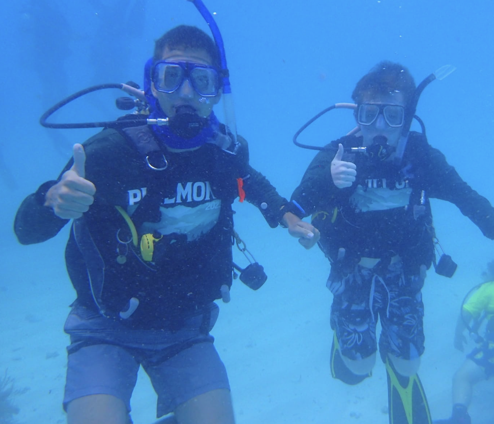
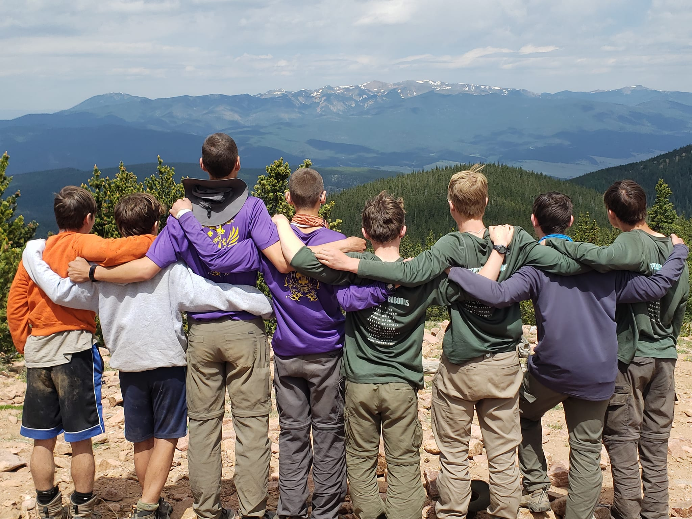

Sea Base

In June of 2024, Troop 375 had the exciting opportunity to visit Sea Base, a premier Scouting destination, for an unforgettable adventure. Our scouts participated in a scuba diving expedition, exploring the vibrant underwater world. With expert instructors guiding the way, the troop dove into crystal-clear waters, discovering marine life and gaining valuable skills in diving. This experience not only deepened our scouts’ appreciation for the ocean but also helped them grow as individuals, building confidence and teamwork. It was an amazing trip that combined adventure, learning, and fun for all involved.
Northern Tier

Three years ago, Troop 375 had the opportunity to embark on an unforgettable adventure at Northern Tier, a renowned high-adventure base in the Boundary Waters Canoe Area Wilderness. Our scouts spent several days canoeing through pristine lakes, portaging between them, and camping under the stars in the remote wilderness. The trip tested their outdoor skills, resilience, and teamwork while allowing them to experience the beauty of nature in its purest form. It was a challenging yet rewarding experience that helped build lasting bonds and fostered a deeper appreciation for the great outdoors.
Philmont

Two years ago, Troop 375 had the incredible opportunity to attend Philmont Scout Ranch, where our scouts embarked on a high-adventure trek through the rugged mountains of New Mexico. The trip included hiking, backpacking, and learning important outdoor skills while enjoying breathtaking scenery. It was an unforgettable experience that challenged our scouts physically and mentally, fostering leadership and teamwork. In addition to Philmont, our troop also participates in the National Youth Leadership Training (NYLT), where scouts develop leadership skills through hands-on activities, team-building exercises, and engaging lessons. Both experiences have had a lasting impact, empowering our scouts to grow as leaders and outdoor enthusiasts.